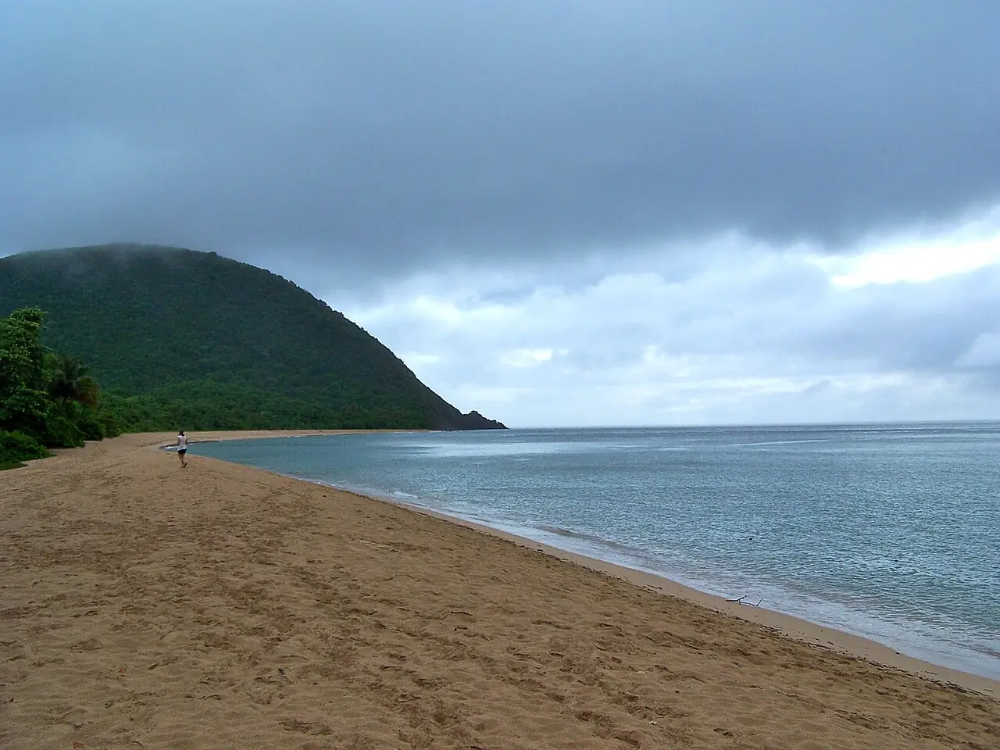

Grande Anse — Deshaies
Basse-Terre, Guadeloupe · baignade

L’une des plus grandes plages de Guadeloupe, un long ruban de sable doré bordé de cocotiers au nord de Deshaies. Calme les jours sans houle, elle peut devenir dangereuse quand la mer se lève.
- Lieu
- Basse-Terre, Guadeloupe
- Niveau
- Variable selon les conditions
- Activités
- baignade
- Type d'eau
- Mer / océan
- Coordonnées
- 16.32, -61.79 (position approximative du secteur)
Dangers à connaître
- Courants d’arrachement, surtout par houle du nord en hiver.
- Shore break puissant quand la mer grossit.
Le conseil d'Ocean Buddy
Installe-toi près du poste de secours et regarde les drapeaux avant d’entrer dans l’eau.
Ouvrir dans Ocean Buddy Télécharger sur l'App Store
Source : Fiche Ocean Buddy · septembre 2026 · à vérifier localement.